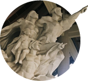
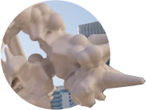
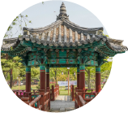

INTRODUCE ABOUT CHEONAN
천안 소개
-
연인과함께

고품격 문화도시
문화적 감성과 예술적 상상력을 마음껏 피우고 자연의 여유를 느낄 수 있도록 여가와 쉼을 불어 넣겠습니다.
-
가족과함께

활기찬 경기도시
온 세상을 환히 비추는 태양이 떠오르듯 천안의 밝은 미래를 위해 역동적인 지역이 되겠습니다.
-
친구와함께
행복한 복지도시
누군가의 일부분이 아니라, 우리 모두의 생애 전체를 촘촘하며 안전하고 든든한 울타리를 만들어 따뜻함이 있습니다.
-
역사여행

친환경 그린도시
우리들의 반복되는 지루한 일상 속에서 한 조각, 여유 한모금, 기쁨 한 움큼을 누릴 수 있도록 일상 곳곳에 행복감이 스며듭니다.
ATTRACTION IN CHEONAN
천안 명소
-
독립기념관
"거래의 얼"과 "한국의 빛"이 살아있는 뜨거운 역사의 현장
MORE
-
유관순열사 사적지
유관순열사의 정신을 후세에 길이 전하기 위하여 설립된 유관순열사사적지
MORE
-
천안삼거리공원
우리나라 삼남대로의 분기점
MORE
-
태조산왕건길과
청동대좌불천안의 진산이라는 태조산에 자리 잡은 남북통일 염원 사찰
MORE
-
아라리오조각광장
학생, 청소년 등 하루 7만여명이 찾는 젊음의 복합 문화광장
MORE
-
성성호수공원
업성동의 '성', 성성동의 '성'을 따서 합쳐 만든 업성저수지
MORE
CHEONAN TRAVEL REPORT
여행리포트
-
어린이농촌체험교실
2023-03-10
어린이 농촌체험교실은 어린이들에게 자연과 농촌의 삶을 경험하고 배우는 기회를 제공하여, 지속가능한 미래를 위한 인식과 교육의 기반을 마련하는 것에 중요성이 있습니다.
-
홍대용과학관에서 우주여행 떠나볼까요?
2023-04-10
비오는 주말 천안 실내 가볼만한 곳을 찾아 홍대용과학관을 다녀왔습니다. 주차장도 넓고 주말인데도 많이 붐비지 않아 편안하게 관람하고 체험할 수 있었습니다.
-
시립미술관 전시전
2023-04-11
람의 감정이라는 것은 복잡하고 미묘한 특징이 있다. 무언가를 그리워하는 것도 사랑하는 것도 기뻐하는 것의 반대편의 다른 감정이 있다.
-
천안흥타령춤축제2023, 거리퍼레이드 현장속으로
2023-05-01
천안흥타령춤축제2023의 하이라이트는 뭐니뭐니해도 거리퍼레이드!!7시부터 방죽안 오거리부터 터미널 사거리까지 진행되었습니다.
-
삼거리갤러리 놀러오세요~!
2023-06-10
꽃이 피고 들판이 초록으로 물들어 주말마다 바삐 나들이를 다니느라 마음은 힐링이지만 어느순간 조금은 더 여유로운 시간을 보내고 싶은 마음이 스멀스멀 피어오르는 지금.
-
천안 흑성산의 아침 풍경
2023-06-11
시원한 동풍이 불어오는 새벽 폭염에 시달리던 지친 몸을 이끌고 시원한 가을바람이 불어오는 흑성산 전망대에 올랐습니다.
-
만두전문점 천안 성거 맛집
2023-02-11
보다 좋은 식재료로 모든 음식을 정성껏 직접 조리하여 제공하고 있어서 같은 가격에 더 질높은 메뉴를 즐길수 있다.
-
생산물판매장
2023-03-11
내부 구성원과 외부 방문객을 위해 마련된 공간으로 연암대에서 생산된 농산물을 판매하는 생산물판매장
-
수신멜론 제철맞아 맛나요!
2023-04-11
은은하고 달달한 향과 부드러운 식감을 자랑하는 수신멜론의 품종은 백설멜론(홈런스타)과 노랑멜론(넘버원)이 있습니다.
-
순대국밥 한 그릇
2023-05-11
병천은 충북 진천, 청주에서 천안삼거리를 거쳐 서울로 올라가는 길목에 자리 잡고 있어 예부터 길손들의 발길이 끊이지 않던 곳이었습니다.
-
아침처럼 먹어본 리얼딸기라떼
2023-06-11
예쁜 카페가 많은 곳으로 카페탐방만 하더라도 한달이 훌쩍 지나갈 정도로 예쁜 집들이 많이 있는데요. 천안에서 하루를 묵고 돌아다니다가 분위기 좋은 카페를 보고 안으로 들어가 보았습니다.
-
이열치열! 이베리코 등뼈로 만든 해장국
2023-07-11
아삭한 양파의 식감에 달큰하면서 새콤한 양념이 어우러져 입맛을 복돋아 줍니다.
-
독립만세운동을 펼쳤던 아우내장터
2023-02-12
천안시 병천면에 위치한 아우내장터는1919년 유관순 열사와 시위 군중이 독립만세운동을 펼쳤던 역사의 현장입니다.
-
전씨시조단소와 검계서원 천안 문화재 여행
2023-03-12
전씨시조단소는 전씨들의 고향으로 눈길을 끄는 곳으로 조상을 모시는 마음이 전해 지는 곳이다.
-
노란 물결 일렁이는 천흥지
2023-04-12
성거산 중턱에 있는 만일사에는 법당 앞에 천흥사터 오층석탑보다 작은 오층석탑(충남 문화재자료 254)이 있다.
-
성성호수공원에서 꽃길 걷자고~~!
2023-05-12
천안 8경 중 6경 성성호수공원은 어느덧 1주년을 맞이하였고, 수변에는 샤스테데이지와 장미꽃이 만발해 시민들이 찾아오는 도심 속 공원이 되었다.
-
철쭉꽃이 화사하게 핀 천년고찰 태조산 성불사 느티나무 천안 여행
2023-06-12
태조사는 느티나무와 함께 태조사 입구에 활짝 피어난 철쭉꽃이 반기는 사찰로 하얀색과 분홍색의 철쭉꽃이 눈길을 끈다.
-
성환읍에서 만난 국보와 천연기념물
2023-07-12
역사를 이야기를 하다 보면, 그 속에는 많은 사건과 인물, 유물과 유적, 동·식물 등이 가득하답니다.
TOUR MAP SECTION
관광지도 영역
You can experience excitement,
insepiration and harmony through the local estivals!